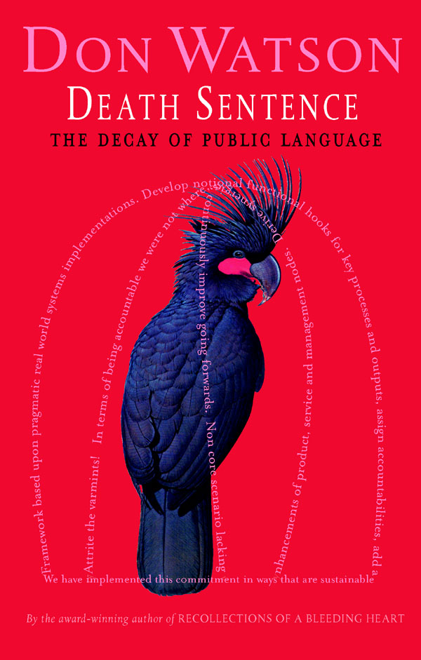

|  |
| About IR |
| Editors |
| Author instructions |
| Copyright |
| Author index |
| Subject index |
| Search |
| Reviews |
| Register |
| Home |
Watson, Don. Death sentence: the decay of public language. Sydney: Knopf, 2003. [4]. 198 p. ISBN 1-74051-206-5 A$29.95
My friend, Frank Miller, who maintains his own site devoted to the decline of language sent me this book. It is not a mystery, in spite of the title, but, as the subtitle indicates, an essay on 'the decay of public language', and I thought it deserved a review, since language is the means by which we communicate what we know and an ineffective use of language limits what we can communicate.
Don's thesis is that encroachment of management language upon the public sphere is leading to a numbing of the language. The management jargon of 'enhancements', 'going forward', 'customer-orientation', etc., etc. has leaked from business into government, local government and academia, with dreadful results. A gem from the Victoria State Government in Australia:
In defining our values, we have formed a range of acceptable and non-acceptable behaviours, which contribute to the success of implementation. Behaviours which indicate that we are complying with values and contra which indicate that we are not. For example, a key contra behaviour, that we are currently focusing on that was identified through our values, is employees displaying disrespectful behaviour towards clients and/or other staff members.... etc., etc., etc. apparently interminably.
Instead of, simply, 'All staff are asked to behave with appropriate respect towards clients and colleagues.' Note also the totally unnecessary use of 'behaviours' - 'behaviour' denotes a complex of actions and activities, it does not need a plural except in certain very limited situations.
Consider also this from the Department of the Prime Minister and Cabinet in Australia:
Funding for legal aid is increasingly meeting less of the demand, but allocating additional funds on a one-off basis without a specific reason may be seen as an admission by the Government that funding is insufficient.
What is it saying? 'Funding for legal aid is insufficient, but we daren't admit it, and we'd like to confuse you so that you don't realise that.'
Watson calls this stuff, 'turgid sludge' and he occasionally discovers examples from various documents on 'knowledge management' and notes:
Knowledge Management is one more mutant form of the managerialism that walks blithely over a whole tradition of Western philosophy, crushing all sublteties and distinctions.
Throughout the book there are examples in the page margin of the good and the bad, sometimes nicely contrasted:
'Language tethers us to the world; without it we spin like atoms,'
(Penelope Lively)
'Achieve a user-centric portal framework.'
(2nd Annual Conference on Government Portals)
My favourite quotations include:
'They risk-taked all day.'
(American Football League Coach, describing the efforts his team had made)
and as a delightful contrast to the turgid:
'They said, 'You have a blue guitar,
You do not play things as they are.'
The man replied, 'Things as they are
Are changed upon the blue guitar.'
(Wallace Stevens)
'The trouble with the French is they have no word for entrepreneur.'
(attr. to G.W. Bush)
And from the author, paraphrased here, because I can't locate it readily in the text:
'Never in history have so many sensible human beings found it so difficult to say something simple.'
There's also a glossary which presents an amusing commentary on some of the author's betes noires, for example:
Going forwards: In future, the future, trajectory, not regressing or stalled, going on (ongoing), what generally happens without anyone needing to say so. (As in: We have a strategy for continuous improvement outcomes going forwards.)
Exercise: Insert going forwards in this sentence:
And God said, Let there be light: and there was light.
Buy this book, read it carefully and you will understand the basis of some of my criticism of 'knowledge management' - the authors write in such appalling 'turgid sludge'. The book deserves to be well-known beyond the narrow confines of that argument however - whenever you fail to understand what a politician is saying (assuming you can be bothered to listen long enough to attempt understanding) you can be sure he or she is saying nothing at all. The problem is that so many people have become inured to the pseudo-psycho-babble of 'human resources management' and the management-babble of the Chief Executive and his/her minions that switch-off mode is the normal state of attention.
Don Watson deserves a Nobel prize of some kind - perhaps one can be established for him. And perhaps the publisher could be persuaded to market it outside of Australia - it doesn't even appear on the main Random House Web site - only on that for Random House, Australia.
Professor T.D. Wilson
Editor in Chief
February. 2004
How to cite this review
Wilson, T.D. (2004). Review of: Watson, Don. Death sentence: the decay of public language. Sydney: Knopf, 2003. Information Research, 9(9), review no. R136 [Available at: http://informationr.net/ir/reviews/revs136.html]